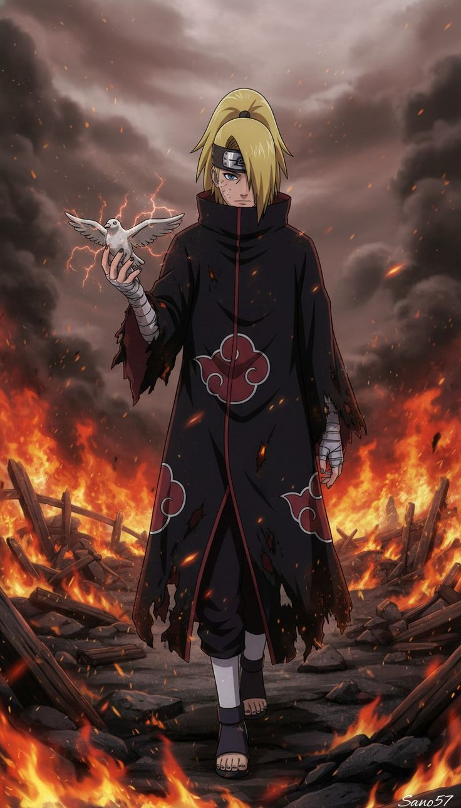

Deidara is a powerful and eccentric member of the Akatsuki in Naruto, known for his explosive abilities and artistic philosophy. Originally a shinobi from the Hidden Stone Village, Deidara was recruited into the Akatsuki after being defeated by Itachi Uchiha, which also sparked his deep rivalry with the Uchiha clan.
Deidara uses a unique technique called Explosion Release, allowing him to mold special clay with mouths in his hands into various shapes like birds, spiders, and dragons that explode on command. He views his explosions as a form of art, strongly believing that “art is an explosion,” meaning beauty exists in a single, fleeting moment. This belief often puts him at odds with his partner Sasori, who sees art as something eternal.
Deidara from Naruto has a bold, expressive, and highly artistic personality centered around his belief that “art is an explosion.” He is passionate about his unique view of art, seeing beauty in brief, destructive moments rather than something permanent, which often brings him into conflict with others like Sasori.
Deidara is energetic, talkative, and somewhat arrogant, frequently underestimating his opponents while confidently showcasing his abilities. He has a dramatic flair and enjoys making a spectacle out of his fights, treating them like performances. Despite his cocky attitude, he is also intelligent and tactical, capable of carefully planning his attacks and adapting in battle.
Deidara from Naruto has unique and highly destructive abilities centered around his Explosion Release (Bakuton), making him one of the most creative fighters in the Akatsuki. He uses special mouths on his palms and chest to mold explosive clay infused with chakra, creating a wide variety of living bombs.
His most common techniques include clay creations like birds for flight, spiders for stealth attacks, and dragons that launch guided explosives. These are categorized into levels such as C1 (small explosives), C2 (large dragon-based attacks), and C3 (massive bombs capable of destroying entire areas). One of his most dangerous techniques is C4 Karura, where he releases microscopic bombs that enter an opponent’s body and destroy them from within at a cellular level, making it nearly impossible to counter without special visual abilities.
Deidara’s ultimate move is C0, a self-destruction technique using a mouth on his chest that creates a gigantic explosion meant to take everything down with him. In addition to his explosive power, he is highly skilled in aerial combat, using his clay birds to stay out of reach while attacking from a distance. His combination of long-range attacks, creativity, and destructive force makes him an extremely dangerous and unpredictable opponent.

Deidara from Naruto carries out several important missions as a member of the Akatsuki, mainly focused on capturing tailed beasts and supporting the group’s larger plans. One of his most notable missions is the capture of Gaara, the One-Tail jinchūriki, where Deidara demonstrates his aerial combat skills and explosive techniques to defeat him and deliver him to the Akatsuki. He also participates in various operations alongside partners like Sasori and later Tobi (Obito Uchiha), helping track and capture other tailed beasts. Throughout these missions, Deidara plays a key offensive role, using his long-range explosive attacks to weaken powerful targets.
His final and most personal “mission” is his battle against Sasuke Uchiha, driven by his desire to prove his art superior to the Sharingan. This fight ends with Deidara using his ultimate self-destructive technique, showing that his dedication to his art and pride defined his actions until the very end.
Deidara joined the Akatsuki after being defeated by Itachi Uchiha in Naruto. Originally a rogue ninja from the Hidden Stone Village, Deidara was known for using explosive clay techniques and was hired as a terrorist bomber. Because of his dangerous abilities, the Akatsuki sought to recruit him.
When members of the Akatsuki—including Itachi—approached him, Deidara challenged Itachi but was easily overwhelmed by Itachi’s Sharingan genjutsu. Humiliated by his defeat and fascinated by Itachi’s power, Deidara was forced to join the organization. This moment deeply impacted him, leading to his strong hatred toward the Uchiha clan and his determination to prove that his “art” was superior to their visual abilities.